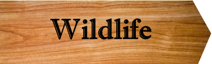

GeologyAlmost all of the natural surface features that we can see in the forest are related to glacial action and glacial melting 14,000-10,000 years ago. All but the lowest parts of the Fairlee Forest are covered with glacial till. The most obvious evidence of till are the boulders and rocks that cover the ground almost everywhere. These rocks were ripped out and then ground up at the bottom of the moving glacier. Look at a rock alongside any trail and see if it looks the same as nearby bedrock, or if it is an “exotic” that was transported from some “up glacier” location.Glacial Scrape Marks The last glacier moved almost directly from north to south in the Forest region and this movement left marks that can still be seen. Some places with exposed bedrock have N-S scrapes that are about one inch wide and a foot or more long, a result of grinding stones embedded in the glacier bottom. Look for these marks on the top of Bald Top Mountain and other exposed relatively flat peaks and ridges within the forest. Several N-S aligned ridge/gully features 50 feet to 200 feet wide and hundreds of feet long are present in the forest; these seem to be related to glacial scraping on a larger scale. The South Cross Mountain Trail passes through one of these large “scrapes” at its highest location and there are several more below this; some are visible from the Hillside Trail. |
The peaks of Bald Top, Mount May and the other hills and ridges in the Forest are quite flat, smoothed by the many glaciers that came over this area. The Fairlee Wetlands formed in a valley that was scoured out by the glacier and since then partly filled with sediments, with the help of beaver damming. In other places in the Forest such as along the lower Big and Glen Falls Brooks, the erosion from running water after the ice left has carved out V-shaped cross-section valleys, where the water drains well, in contrast to the old glacial valley of the poorly-drained Wetlands.
Old Shorelines: Lake Hitchcock and Lake Morey Ice Chunk
The valley Lake Morey lies in was scraped out and flattened by glacial action, perhaps with help from a re-channeled Connecticut River. After most of the last glacier melted, a large chunk of ice remained where the Lake is today. Sand from streams running off the surrounding hills filled in sediments around the ice chunk and created a natural dam on the south side of the present Lake Morey. On the west side of Lake Morey, just across the road from the boat ramp there is an old gravel quarry where the Rivendell trail enters the Forest. Twelve thousand years ago, this trailhead was under the surface of Lake Hitchcock, which filled the Connecticut River Valley. Climb up to the top of the first steep section and the trail goes left across a flat area toward a lookout on the top of the gravel quarry. The flatter section marks the level of the surface of Lake Hitchcock and the gravel quarry is an old delta where a younger and more much more vigorous (due to glacial meltwater) Glens Falls Brook dumped its loads of sediment into Lake Hitchcock. This is called a “kame” delta because it was constrained by the Lake Morey Ice Chunk, creating the steep slope you just climbed. The Lower Brushwood Road crosses a flat open section ½ mile up from the Lake Morey Road that also marks the old Lake Hitchcock shoreline. When hiking above the western side of Lake Morey, for example on the trail to Eagle’s Bluff on Echo Mountain, look for several other terraces (relatively flat areas in otherwise sloping terrain) that are likely other old Lake Hitchcock shorelines or kame deltas where streams were blocked by glacial ice.
Bedrock Geological History
In a few places, such as prominent ledges, cliffs, stream beds and road cuts, bedrock is exposed in the Forest. All of the exposed bedrock in the Forest is part what geologists call the Gile Mountain Formation. This formation was created from sand, silt and clay sediments deposited in an inland sea that covered most of eastern Vermont 410 million years ago. This was a period of great tectonic activity as several miniature continents called terranes smashed into this region and created mountains that were taller than the Alps. The minerals in these mountains came from several different locations, including the tectonic plates of Laurentia, Baltica and Amazonia which later became parts of North America, Europe and South America. After being deposited in the bottom of the inland sea, these cosmopolitan sediments became buried under miles of rock pushed in from the terrane collisions. Here they were subjected to extreme pressure and heat and metamorphosed into the slate, quartz, mica, schist, gneiss and other rock types we see today in the Forest, exposed after hundreds of millions of years of erosion. The terrane collisions also tipped the old inland sea deposits sideways toward the West northwest about 90 degrees so that now most of the bedrock layers are aligned vertically and intersect the surface in lines running from the south-southwest to north-northeast directions.
Bedrock Types and Locations
The first part of the Gile Mountain Formation to be deposited was mostly clay and, when metamorphosed, formed what we now call Meeting House Slate or “Dgm” on the geology map below. Glens Falls flows over Meeting House Slate; the vertical alignment of the rock layer is obvious here and helps create the vertical erosion face under the falls. The Meeting House Slate only exists in the easternmost part of forest that is near Lake Morey. To the west of Dgm lies the lighter grey colored rocks of the “Dgqr” member of Gile Mountain formation. You can see these rocks starting from the parking lot at the top of Bald Top Road and up from here on all the parts of the Forest east of the main ridgeline. Look for outcroppings and loose rocks of beautiful white/clear quartz, which is common in the Dgqr rock formation. On the western slope of the Forest, and also along the top of the main ridge including Bald Top and May Mountains, a third type of Gile Mountain Formation bedrock called “Dgq” is present; this tends to be a little darker and browner then the previous type. Although all the bedrock and non-exotic loose rocks in the Fairlee Forest are in the Gile Mountain Formation, there is considerable variation from one location to another and the motivated observer can find quartz, mica, slate, schist and many other types of rocks in the forest. However, there are no known igneous intrusions in the Fairlee Forest bedrock, so you are not likely to find granite or volcanic rocks, even though these are interspersed elsewhere in the Gile Mountain Formation. If you do find some granite, record where it is and tell us!

|  |